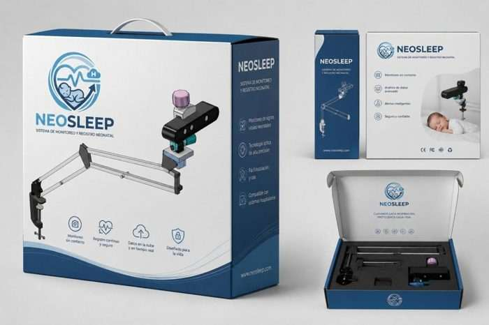

NeoSleep
Innovación en cada respiro
Sistema de monitoreo respiratorio neonatal no invasivo, basado en visión artificial y sensado de profundidad, con detección de apnea y alerta en tiempo real.

¿Qué es NeoSleep?
NeoSleep es un sistema de monitoreo respiratorio neonatal sin contacto. Un sensor de profundidad montado sobre la cuna adquiere un mapa de distancias de la escena; mediante visión artificial y procesamiento digital de imágenes, el sistema localiza al lactante, clasifica su posición y cuantifica el desplazamiento torácico asociado a la respiración.
A partir de esa señal estima la frecuencia respiratoria (respiraciones por minuto) y detecta pausas respiratorias compatibles con apnea. Ante un evento confirmado, activa una alarma sonora local y envía una notificación al dispositivo móvil del cuidador.
A diferencia de los monitores basados en electrodos, bandas o sensores adheridos, la medición es remota: no hay cables, parches ni accesorios en el cuerpo del paciente. La arquitectura integra adquisición, procesamiento, alertas, visualización y registro histórico en un solo sistema, orientado al entorno doméstico y de bajo costo.
Sensado sin contacto
Sensor de profundidad sobre la cuna; ningún elemento en el cuerpo del lactante.
Medición del desplazamiento torácico en milímetros
Ruido del sensor de 1 a 2 mm en el mapa de profundidad.
Alerta multicanal en tiempo real
Buzzer local y notificación móvil al cuidador.
NeoSleep es una herramienta de monitoreo complementario; no sustituye la supervisión de un adulto ni la valoración clínica.
Limitaciones de las soluciones actuales de monitoreo neonatal
Durante los primeros meses de vida, el sistema respiratorio y el control neurológico de la respiración se encuentran en desarrollo, lo que puede originar pausas respiratorias difíciles de identificar durante el sueño. La vigilancia humana continua no es viable durante toda la noche.
Las soluciones disponibles presentan tres limitaciones: sensores en contacto directo con el paciente (invasividad), costo elevado y orientación al entorno hospitalario, lo que reduce su accesibilidad para el monitoreo doméstico. Algunos dispositivos, además, carecen de análisis inteligente de patrones respiratorios y de alertas en tiempo real.
Medición remota, sin sensores sobre el paciente.
Desplazamiento torácico medido en tiempo real, no una aproximación visual.
Arquitectura en cuatro etapas, del sensado a la alerta
Adquisición
Sensor de profundidad Orbbec Astra con proyector infrarrojo, montado en un brazo articulado plegable con abrazadera de sujeción a la cuna. Genera un mapa de distancias de la escena con un ruido de 1 a 2 mm.
Detección y clasificación
Localización del lactante por detección de rostro o silueta y clasificación de su posición (supino, prono, lateral) mediante una red neuronal convolucional (CNN) con 95.6% de precisión, entrenada con 577 imágenes reales de la cuna.
Estimación respiratoria
Cuantificación del desplazamiento torácico en milímetros y estimación de la frecuencia respiratoria en respiraciones por minuto.
Detección de apnea y alertas
Si el sistema no confirma respiración durante el intervalo de verificación, genera una alerta de apnea con buzzer local y notificación móvil por Telegram. Un respaldo anti-falsa-alarma redujo las falsas alertas de 13 a 0. También se reporta la pérdida de señal (signal_lost) cuando el lactante sale del encuadre, y cada evento queda registrado junto con su resolución.

Mensajes reales del sistema
ALERTA: signal_lost — No se detecta al bebé (ni cara ni silueta) en cuadro
Resuelto
Panel del cuidador
Panel web accesible desde el dispositivo móvil del cuidador y ejecutado sobre red privada, con tres vistas:
- Inicio: frecuencia respiratoria (resp/min), posición, tiempo de monitoreo y alertas activas.
- Historial: gráfica de la sesión con datos almacenados en base de datos.
- Alertas: mismo formato que la notificación enviada por Telegram.
Vista interactiva del panel con datos de ejemplo. Por privacidad, el sitio público muestra únicamente una representación del mapa de profundidad; no se publican imágenes del lactante. El botón «Simular alerta» reproduce el buzzer y la notificación.
Validación experimental y de mercado
Validado en condiciones reales de uso con un lactante durante el sueño, y con una encuesta de mercado a 270 personas.
Falsas alarmas de apnea: sesión de 16 min previa al ajuste del respaldo anti-falsa-alarma, frente a 20 sesiones posteriores sin falsas alertas.
Precisión del clasificador de posición (CNN) en tres clases: supino, prono y lateral; 577 imágenes reales de entrenamiento.
Ruido del sensor en el mapa de profundidad, reportado sin inflar la precisión.
De 270 encuestados (confianza del 90%) adquiriría un dispositivo no intrusivo que detecte apnea en tiempo real.
Intención de adquisición
Pregunta 10 · n = 270
Disposición de pago
Pregunta 11 · n = 270
38.1% de los encuestados pagaría $3,000 o más (21.1% entre $3,000 y $4,000 y 17% más de $4,000). Cerca del 60% de los encuestados son padres o familiares que cuidan a un bebé.
Alcance: el sistema no mide saturación de oxígeno (SpO2) ni discrimina entre vigilia y sueño. Solo se reportan variables que el sistema puede sustentar con evidencia.
Mismo sistema, capacidades ampliadas
Mismo sistema, capacidades ampliadas con cada ronda de retroalimentación experimental. NeoSleep evolucionó de un prototipo de monitoreo respiratorio por cámara a un sistema integral de monitoreo, registro, visualización y comunicación de información sobre el estado del lactante durante el sueño.
| Monitoreo de respiración | Con cámara. |
|---|---|
| Visualización | Gráfica de la respiración detectada. Visualización convencional con cámara. |
| Monitoreo cardíaco | No incorporado. |
| Detección de movimiento | Enfocado en la respiración. |
| Aplicación móvil | No disponible. |
| Alertas | Una alerta ante condición de riesgo. Alerta sonora integrada en el dispositivo; alerta al cuidador principalmente en el dispositivo. |
| Atención de emergencia | Alerta local. |
| Adaptabilidad y portabilidad | Estructura definida; instalación determinada. |
| Alcance | Monitoreo y alerta. |
| Monitoreo de respiración | Continuo, con visualización y registro de datos. |
|---|---|
| Visualización | Gráfica con registro histórico, consultable durante el monitoreo. Vista normal y modo de oscuridad con iluminación tipo láser.en validación |
| Monitoreo cardíaco | Estimación del ritmo cardíaco.en desarrollo |
| Detección de movimiento | Registro de movimientos del lactante. |
| Aplicación móvil | Para visualizar, registrar y consultar la información. |
| Alertas | Sistema con distintos tiempos de respuesta. Buzzer en el dispositivo; alerta por radiofrecuencia en un dispositivo independiente para el cuidador.radiofrecuencia en desarrollo |
| Alerta al cuidador | Notificación en el teléfono celular (Telegram). |
| Atención de emergencia | Número de línea de atención médica dentro de la aplicación. |
| Adaptabilidad y portabilidad | Mecanismo de adaptación a distintos entornos; plegable y transportable, para cunas, camas y espacios de descanso. |
| Alcance | Monitoreo, registro, visualización, comunicación y asistencia al cuidador. |
| Característica | Etapa local | Etapa regional |
|---|---|---|
| Monitoreo de respiración | Con cámara | Continuo, con registro |
| Visualización | Gráfica de la respiración | Registro histórico consultable |
| Aplicación móvil | No disponible | Disponible |
| Alerta al cuidador | En el dispositivo | Notificación móvil |
| Portabilidad | Instalación determinada | Plegable y transportable |
Nivel de madurez: TRL 5 — Prototipo validado en un entorno relevante
Tecnología integrada en un prototipo funcional
Componentes y subsistemas integrados
Funcionalidad demostrada en condiciones relevantes
Interfaz y comunicación entre módulos
Sistema de alertas funcional
Adaptabilidad
Visualización y registro de información
Evolución respecto al prototipo anterior
El escalamiento a niveles superiores requiere ampliar las pruebas de validación, fortalecer la confiabilidad, completar las evaluaciones técnicas y atender los requisitos normativos y regulatorios aplicables.
Normatividad y propiedad intelectual
Normatividad de referencia
El desarrollo toma como referencia la NOM-241-SSA1-2021 (buenas prácticas de fabricación de dispositivos médicos), la NOM-001-SCFI-2018 (seguridad de equipos electrónicos), la ISO 13485 (sistemas de gestión de calidad), la ISO 14971 (gestión de riesgos) y la IEC 60601 (seguridad y desempeño de equipos electromédicos).
El sistema aún no cuenta con certificación; las evaluaciones técnicas y normativas están pendientes.
Estrategia de protección
Análisis de patentabilidad ante el IMPI, registro de la marca NeoSleep y de su identidad gráfica, registro del software ante el INDAUTOR y resguardo de algoritmos y procedimientos de calibración como secreto industrial.
$3,194.75 MXN
Pago único por el dispositivo. Incluye sensor de profundidad, brazo articulado plegable con abrazadera, electrónica de adquisición y alertas, orientación de instalación y puesta en marcha, y soporte técnico inicial.
Precio preliminar. El pedido es una simulación para el concurso: no se realiza ningún cargo.

“NeoSleep no reemplaza el cuidado de un padre: le da los ojos que no pueden estar despiertos las veinticuatro horas.”
Rafael Medina García
Ing. Mecatrónica
Líder del proyecto
Jesús Yahir Alanís Sánchez
Ing. Mecatrónica
Programación y software
Naomi Ximena Virgen Naranjo
Ing. Industrial
Diseño e imagen del proyecto
Diego Tristán Villegas Guzmán
Ing. Mecatrónica
Diseño mecánico
Ramón Mora Sandoval
Ing. Mecatrónica
Diseño electrónico e integración del hardware
Asesores
Cristopher Marta Gutiérrez
Brisa Berenice Villegas Malagón
Instituto Tecnológico Superior de Ciudad Hidalgo · Región 4